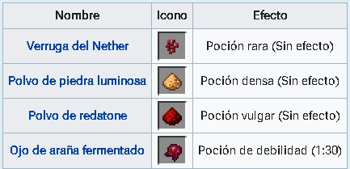
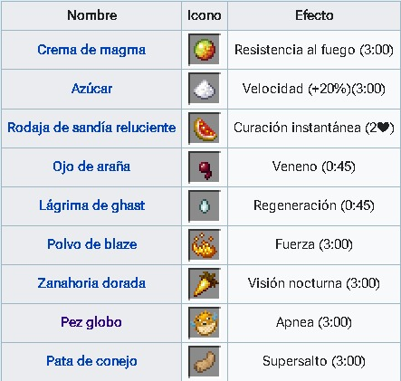
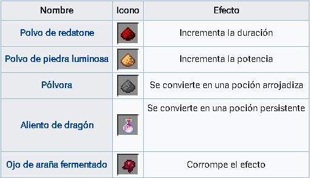
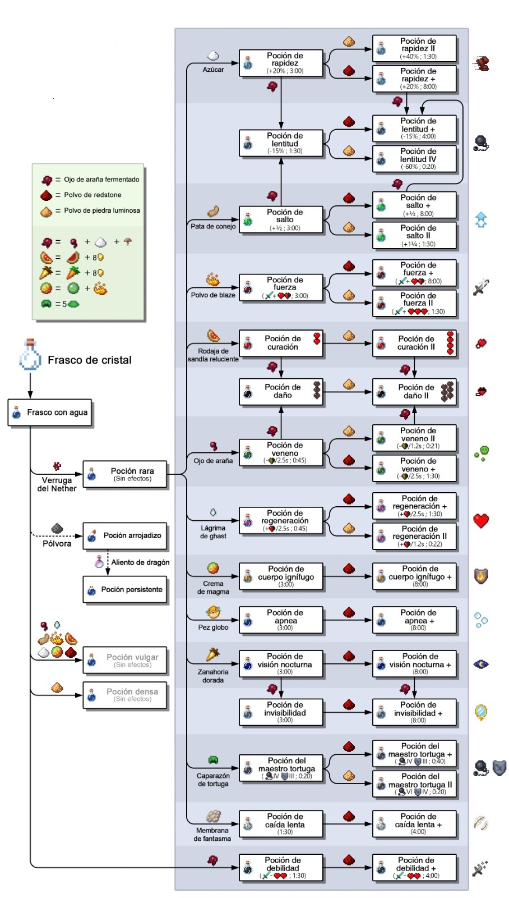

La alquimia (Brewing en la versión original del juego) es la elaboración de las diferentes pociones que se pueden obtener en Minecraft. A pesar de que a través de la alquimia se pueden obtener una gran variedad de pociones con efectos diversos, en Minecraft hay muchos más efectos aparte de los que las pociones proporcionan.
A través de un soporte para pociones, podremos acceder a una interfaz que posee cinco espacios donde se colocan frascos de agua, los ingredientes y polvo de blaze como combustible. Los tres primeros espacios son para colocar las pociones, y pueden ser frascos de agua o pociones ya elaboradas. En el cuarto espacio se debe colocar el ingrediente de la poción. Si es válido, empezará a burbujear la barra de la izquierda y la flecha de la derecha se extenderá hacia abajo. El proceso tarda un poco más que los procesos de un horno.
El soporte puede equiparse con tolvas para permitir cierto grado de automatización del proceso. En la práctica, se colocaría una tolva en la parte de arriba con los ingredientes, y en los laterales se pondrían los frascos de agua o las pociones. Hay "ingredientes" un poco más difíciles de conseguir, como por ejemplo las varas de blaze (necesarias para hacer el soporte para pociones), la crema de magma, las lágrimas de ghast, el polvo de piedra luminosa o (uno de los más importantes) las verrugas del Nether (con las que se pueden fabricar la mayoría de las pociones).
Los ingredientes base son el punto de partida de todas las pociones. La verruga del Nether es el ingrediente primario que se añade en los frascos de agua en esta fase, ya que hace falta para hacer la mayoría de pociones. El ojo de araña fermentado permite hacer la poción de debilidad. Por último, el resto de ingredientes base no permiten pociones útiles.
Los ingredientes secundarios imbuyen a la poción rara con un efecto particular, pero no alteran su duración o intensidad. Cuando son añadidos directamente al frasco de agua, cualquiera de estos ingredientes producirá una poción vulgar (a excepción de la zanahoria dorada, que no puede ser infundida en un frasco de agua para hacer una poción).
Los modificadores cambian las propiedades de las pociones. Las de duración ampliada y mayor potencia pueden ser intercambiadas.
Corrupción del efecto: El ojo de araña fermentado cambiará el efecto base de la poción, normalmente invirtiéndolo o produciendo un efecto negativo.
A continuación se mostrarán las recetas más eficientes que pueden emplearse.
